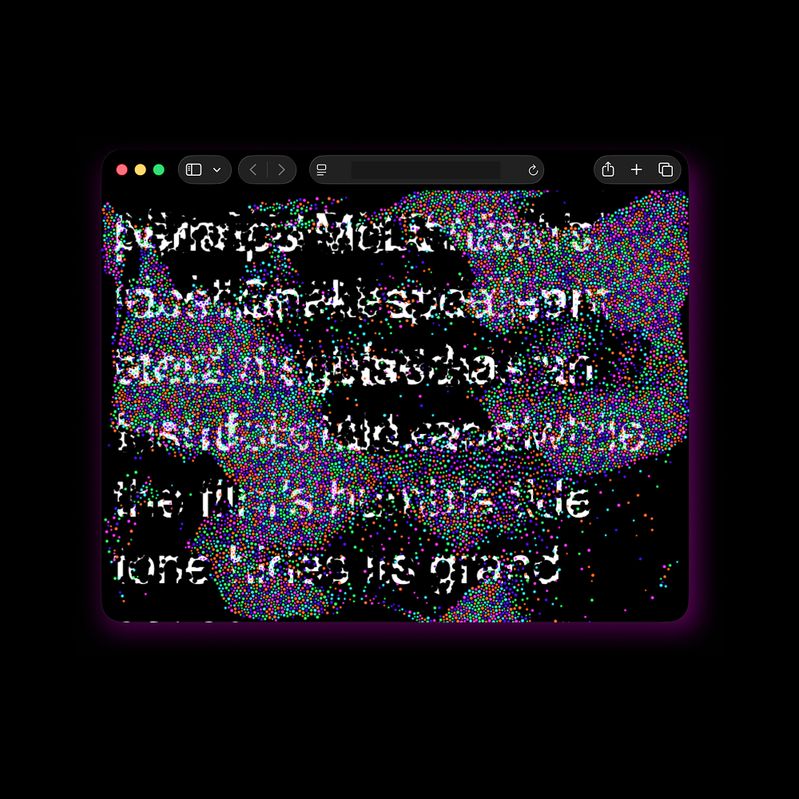

Another Audience
Design Research (in process)
Nov 2025 - Present
Individual Project

Overview
Another Audience is an interactive experimental project that examines patterns of cultural content consumption from a user experience perspective within the operational logic of generative AI systems that collect, learn from, and utilize web-based data.
The project investigates how cultural content experience, exchange of interpretations, information acquisition, communication, and human–computer interaction are shaped in an internet environment that is increasingly inseparable from AI systems.
These research insights are articulated through an experimental web-based format. Initiated in November 2025, the project has produced its first output, Typewriter, which was publicly presented at the 2026 Hochschultage exhibition at Hochschule für Künste Bremen.